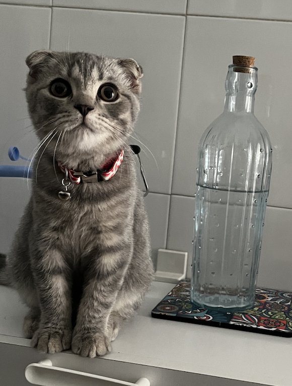

Hayatım boyunca tanıdığım en sakin ve yılışık kedi olabilir. Kendini sevdirmek için şekilden şekile girer. Asla kaçmaz. Bir kere o minik çenesine dokunduğunuzda olduğu yere dökülme gibi bir özelliğe sahiptir.
Gerçek bir paşadır. Söz konusu yemek olunca kimse onu durduramaz. Kendisini kucaklama isteğini bastırmak zorundasınızdır. Çünkü sadece o isterse gelir ve süresini de kendisi belirler. Ayrıca çok gevezedir. Sürekli konuşur.